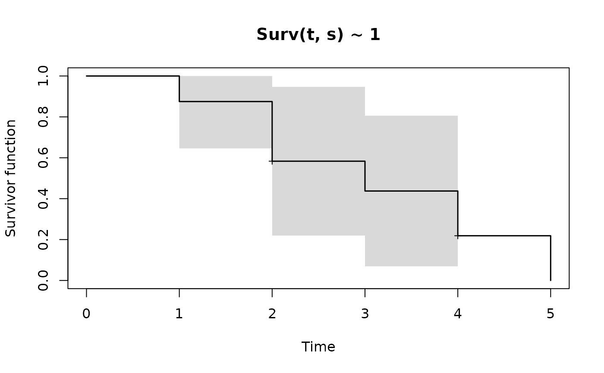

Life tables, Kaplan-Meier, and the discrete time estimators
Source:R/rate-methods.R, R/rate.R
tda_ltb.Rdtda_ple is the product-limit estimator, which is Kaplan-Meier;
tda_km is an alias for it. tda_ltb groups into intervals.
tda_dple and tda_dltb are the discrete time versions, and
tda_diple handles interval censored data.
Usage
tda_dple(formula, data, dir = tempfile("tda"), ...)
tda_dltb(formula, data, dir = tempfile("tda"), ...)
tda_diple(data, start, lower, upper, status, dir = tempfile("tda"), ...)
tda_ltb(
formula,
data,
tp = NULL,
cfrac = NULL,
weights = NULL,
options = list(),
dir = tempfile("tda"),
...
)
tda_ple(
formula,
data,
compare = FALSE,
quantiles = NULL,
at_survival = NULL,
weights = NULL,
options = list(),
dir = tempfile("tda"),
...
)
tda_km(formula, data, ...)Arguments
- formula
Surv(t, s) ~ 1, or with a grouping term on the right to estimate separately per group.- data
a data frame.
- dir
working directory.
- ...
passed to
tda_run.- start, lower, upper, status
columns for
tda_diple, as names or as vectors. The event is known to fall betweenlowerandupper. Explicit columns rather than a formula, because the four-argumentSurv()already means(start, end, origin, destination)for the multi-state models.- tp
interval boundaries for the life table, e.g.
seq(0, 500, 30).- cfrac
for
tda_ltb, the fraction of censored cases within an interval counted as part of the risk set (TDA'scfrac=, default 0.5).- weights
optional case weights, a column name or a vector as long as the data – TDA's
cwt = W;, a separate command rather than anedef=option, which stays active for whatever runs after it.- options
a named list of further TDA options, passed through.
- compare
for
tda_ple, also run TDA's tests of whether the group survivor functions differ. Needs at least two groups.- quantiles
for
tda_ple, time values to report the survivor function at, e.g.c(5, 10, 20); TDA'sqt=. The resulting table (one row per transition per quantile) is parsed into the returned object'squantilescomponent, not left as raw console text –qt=writes to the console, notout.ple, unlike every other tabletda_plereturns.- at_survival
for
tda_ple, the reverse ofquantiles: survival probabilities, in decreasing order (seq(0.9, 0.1, by = -0.1), or just0.5for the median survival time), to report the time each is reached at – TDA'sqo=. Despite an identical description in TDA's help text, this is a different request fromquantiles/qt=, not an alias for it. Several values are fine, in decreasing order: TDA's parser readsqo=with the same list reader asqt=and rejects an ascending list as a syntax error, which is what an earlier note here mistook for "one value only".
Value
An object carrying table, blocks with one entry per
group or transition, and for the product limit median. Be
precise about the pair: table is deliberately only the
first block, the convenience view for the common single-group
call; a grouped or multi-transition fit's full result is
blocks (named by group), and anything that must see
everything – comparisons, exports, your summaries – should
read do.call(rbind, fit$blocks), never table alone.
The product-limit columns are time, events,
censored, n.risk, survivor, std.err
and cum.rate.
Details
The survivor function's standard errors are the usual Greenwood
estimate (the manual gives the formula in section 6.5.2), the same
one survival::survfit reports, so the two agree on identical
data.
Censoring and competing risks
The second argument of Surv() is the destination state, not simply
an event indicator. Zero means no transition, so it is a censored case. A
value above 1 is a second destination, which makes the data competing
risks, and the estimate is returned per transition in $blocks.
See also
Other rate models:
tda_constrain(),
tda_control(),
tda_rates(),
tda_split(),
tda_survivor(),
tda_transitions(),
vcov.tda_fit()
Examples
d <- data.frame(t = c(4, 3, 1, 1, 2, 2, 3, 5), s = c(1, 1, 1, 0, 1, 1, 0, 1))
km <- tda_km(Surv(t, s) ~ 1, d)
km$table
#> id index time events censored n.risk survivor std.err cum.rate
#> 1 0 0 0 0 0 8 1.0000000 0.0000000 0.0000000
#> 2 0 1 1 1 0 8 0.8750000 0.1169268 0.1335314
#> 3 0 2 2 2 1 6 0.5833333 0.1855610 0.5389965
#> 4 0 3 3 1 0 4 0.4375000 0.1879335 0.8266786
#> 5 0 4 4 1 1 2 0.2187500 0.1809849 1.5198258
#> 6 0 5 5 1 0 1 0.0000000 NA NA
plot(km)

# ltb: the same data grouped into intervals rather than at each event time
tda_ltb(Surv(t, s) ~ 1, d, tp = seq(0, 6, 2))$table
#> start midpoint entering censored exposed events prob
#> 1 0 1 8 1 7.5 1 0.1333333
#> 2 2 3 6 1 5.5 3 0.5454545
#> 3 4 5 2 0 2.0 2 1.0000000
# ple: tda_km's underlying function, with two features tda_km does
# not expose -- compare = TRUE tests whether group survivor functions
# differ, and quantiles reads the curve at chosen times
set.seed(1)
d1b <- data.frame(t = round(rexp(40, 0.1), 1) + 0.5, s = rbinom(40, 1, 0.8),
grp = rep(c("A", "B"), 20))
pf <- tda_ple(Surv(t, s) ~ factor(grp), d1b, compare = TRUE,
quantiles = c(5, 10))
pf$comparison # a log-rank test between the two groups' curves
#> sn org des test statistic df signif
#> 1 1 0 1 Log-Rank (Savage) 0.169429722 1 0.31938087
#> 2 1 0 1 Wilcoxon (Breslow) 0.001062546 1 0.02600381
#> 3 1 0 1 Wilcoxon (Tarone-Ware) 0.005780714 1 0.06060557
#> 4 1 0 1 Wilcoxon (Prentice) 0.013353380 1 0.09199622
pf$quantiles # the survivor function at t = 5 and t = 10, per group
#> sn org des group survivor quantile
#> 1 1 0 1 A 0.6751746 5
#> 2 1 0 1 A 0.5581333 10
#> 3 1 0 1 B 0.7979173 5
#> 4 1 0 1 B 0.4695227 10
# dple, dltb: the discrete-time versions, for integer time already grouped
# into periods -- t itself is the period here, not a continuous duration
set.seed(44)
d2 <- data.frame(t = sample(1:10, 60, TRUE), s = rbinom(60, 1, 0.8))
tda_dple(Surv(t, s) ~ 1, d2)$table
#> index time n.risk events censored rate survivor
#> 1 0 0 60 0 0 0.00000000 1.0000000
#> 2 0 1 60 8 3 0.13333333 1.0000000
#> 3 0 2 49 6 0 0.12244898 0.8666667
#> 4 0 3 43 2 2 0.04651163 0.7605442
#> 5 0 4 39 0 1 0.00000000 0.7251701
#> 6 0 5 38 7 1 0.18421053 0.7251701
#> 7 0 6 30 6 1 0.20000000 0.5915861
#> 8 0 7 23 8 0 0.34782609 0.4732689
#> 9 0 8 15 4 3 0.26666667 0.3086536
#> 10 0 9 8 4 1 0.50000000 0.2263460
#> 11 0 10 3 1 2 0.33333333 0.1131730
tda_dltb(Surv(t, s) ~ 1, d2)$table
#> index age cases events rate one.minus.rate survivor life.expectancy
#> 1 0 0 0 0 0.0000000 1.0000000 1.0000000 1.272727
#> 2 0 1 11 8 0.7272727 0.2727273 1.0000000 1.272727
#> 3 0 2 6 6 1.0000000 0.0000000 0.2727273 2.000000
#> 4 0 3 4 2 0.5000000 0.5000000 0.0000000 0.000000
#> 5 0 4 1 0 0.0000000 1.0000000 0.0000000 0.000000
#> 6 0 5 8 7 0.8750000 0.1250000 0.0000000 0.000000
#> 7 0 6 7 6 0.8571429 0.1428571 0.0000000 0.000000
#> 8 0 7 8 8 1.0000000 0.0000000 0.0000000 0.000000
#> 9 0 8 7 4 0.5714286 0.4285714 0.0000000 0.000000
#> 10 0 9 5 4 0.8000000 0.2000000 0.0000000 0.000000
#> 11 0 10 3 1 0.3333333 0.6666667 0.0000000 0.000000
#> remaining.life.expectancy
#> 1 1.2727273
#> 2 0.2727273
#> 3 0.0000000
#> 4 0.0000000
#> 5 0.0000000
#> 6 0.0000000
#> 7 0.0000000
#> 8 0.0000000
#> 9 0.0000000
#> 10 0.0000000
#> 11 0.0000000
# diple: the event is known only to fall between lower and upper
set.seed(45)
d3 <- data.frame(start = 0, lower = sample(1:8, 40, TRUE))
d3$upper <- d3$lower + sample(1:3, 40, TRUE)
d3$status <- rbinom(40, 1, 0.85)
tda_diple(d3, start = "start", lower = "lower", upper = "upper",
status = "status")$table
#> index n.risk events rate survivor
#> 1 0 40.000000 0.000000 0.00000000 1.0000000
#> 2 1 40.000000 0.750000 0.01875000 1.0000000
#> 3 2 39.250000 2.166667 0.05520170 0.9812500
#> 4 3 37.083333 3.333333 0.08988764 0.9270833
#> 5 4 33.750000 3.916667 0.11604938 0.8437500
#> 6 5 29.833333 3.916667 0.13128492 0.7458333
#> 7 6 24.916667 5.083333 0.20401338 0.6479167
#> 8 7 17.833333 5.083333 0.28504673 0.5157330
#> 9 8 11.750000 2.750000 0.23404255 0.3687250
#> 10 9 9.000000 1.666667 0.18518519 0.2824277
#> 11 10 5.333333 1.083333 0.20312500 0.2301262
#> 12 11 0.250000 0.250000 1.00000000 0.1833818